If you are not familiar with topological sorting, please refer to our explore cards Topological Sorting Explore Card. We will focus on the usage in this article and not the underlying principles or implementation details.
Topological sorting is an algorithm used to arrange a set of nodes with directed edges in a linear order, such that
for every directed edge (u, v), node u appears before node v in the ordering.
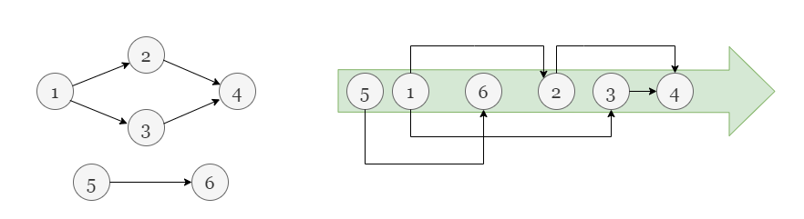
The key idea behind topological sorting is to identify nodes that have no incoming edges (indegree = 0), indicating they have no dependencies on other nodes. These nodes are placed at the beginning of the ordering. Subsequently, we iteratively process the remaining nodes, eliminating their incoming edges and adding them to the order. This process continues until all nodes are placed in the final order.
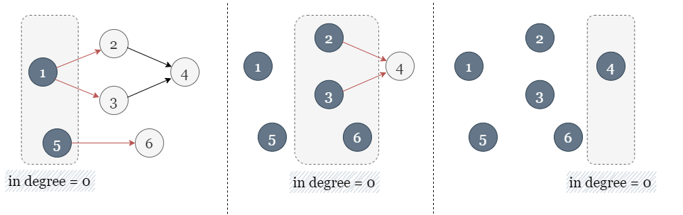
However, if the number of visited nodes is less than the total number of nodes, it indicates the presence of a cycle in the graph.
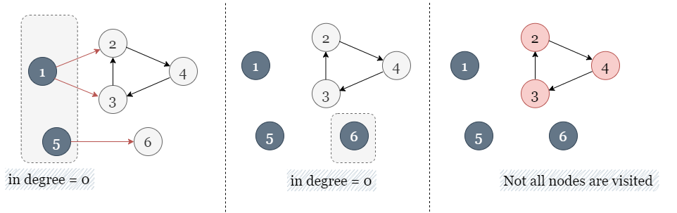
In this problem, we are dealing with a more complex variation of the topological sorting algorithm. The directed
edges are described by beforeItems, but we have an additional requirement. Specifically, we need to
consider the condition that nodes within the same group must be next to each other. For instance, in the following
scenario, there are several nodes belonging to different groups, making it impossible to find a valid arrangement.
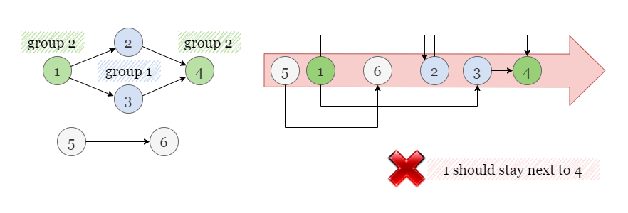
Since the problem statement specifies that nodes within the same group must be grouped together, during the sorting
process, if one of the nodes belongs to a particular group i, it implies that we also have dependencies
with all the nodes within the group i.
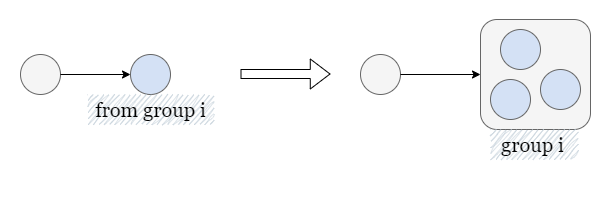
Therefore, when performing topological sorting, it is crucial to gather all nodes belonging to the same group and ensure their relative order based on their dependencies. A rough example demonstrating this concept is depicted in the diagram below.
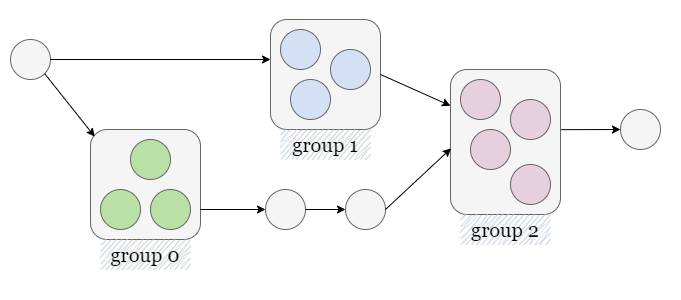
Consequently, the objective is to achieve two levels of sorting:
As a preliminary step, it is important to consider items that do not belong to any group (group[i] = -1)
as separate groups, each consisting of only a single item.
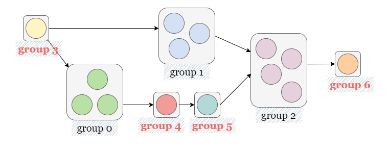
Firstly, we perform a topological sort on the items. The topological sort ensures that items are processed in an order that respects their dependencies, regardless of the groups they belong to.
It's important to note that this sorted order may not always be correct for items that belong to
different groups, as depicted by items with red marks, since this topological sort only considers the dependencies
of items. For instance, in the picture below, the items belonging to the green group are not interconnected, but we
can infer that their order, if connected within the green group, should be I, II, III.
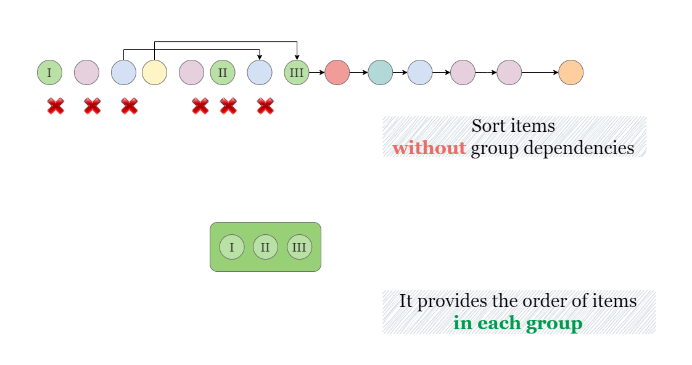
Afterward, we take into account the dependencies between groups. Whenever we encounter two nodes from different groups, it signifies a precedence relationship between the respective groups. As a result, we sort these groups accordingly, establishing the relationship that determines the order in which they should be processed.
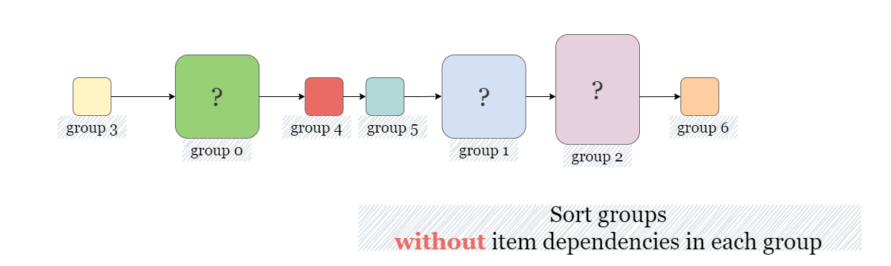
Finally, let's combine both the sorted groups and sorted items. Note that if the topological sort on either the groups or items detects a cycle, then the task is impossible. This ensures that groups are processed in an order that respects their dependencies, and within each group, the items are processed in an order that respects their dependencies.
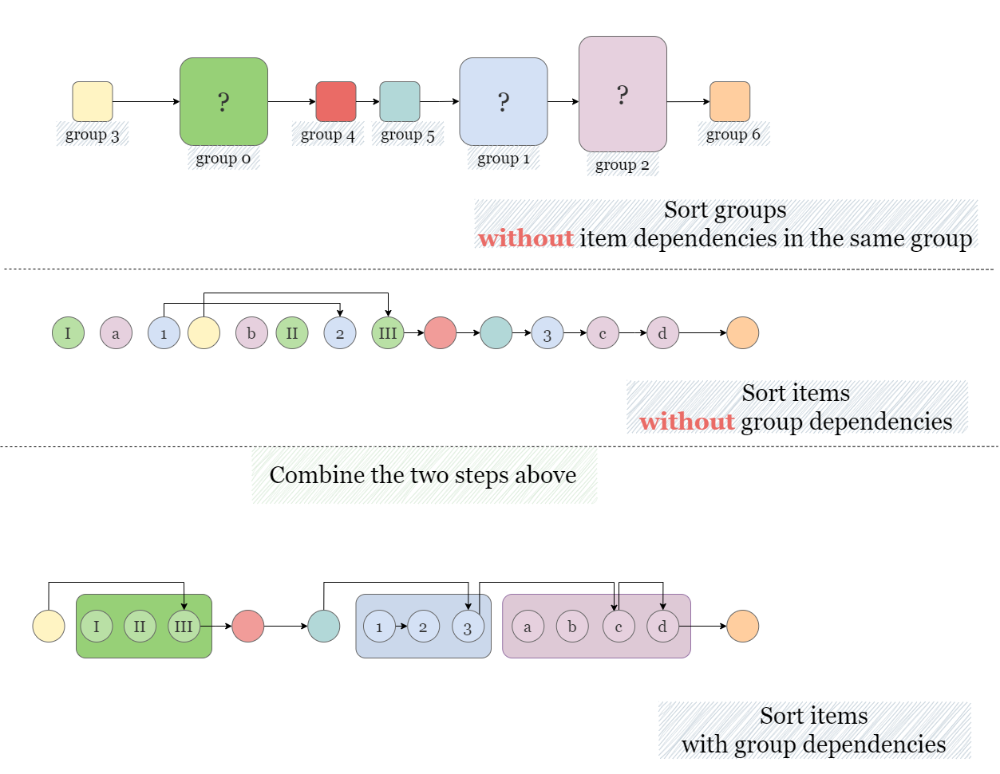
To be more specific, when sorting all the items (without group dependencies), we iterate through them and assign each item to its corresponding group. By doing so, at the end of the iteration, the items within each group will be properly ordered based on their dependencies within that particular group.
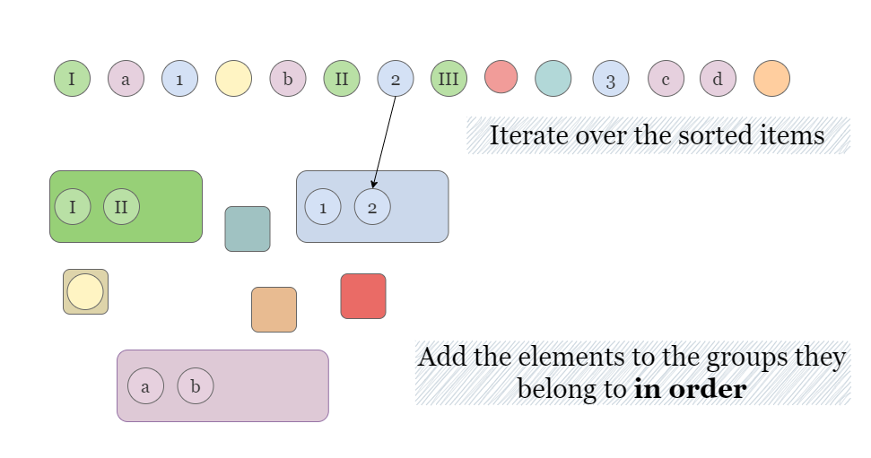
After the iteration, we successfully collect all items in each group with correct order. We then refer to the previously established sorted order of the groups and arrange the items within each group accordingly.
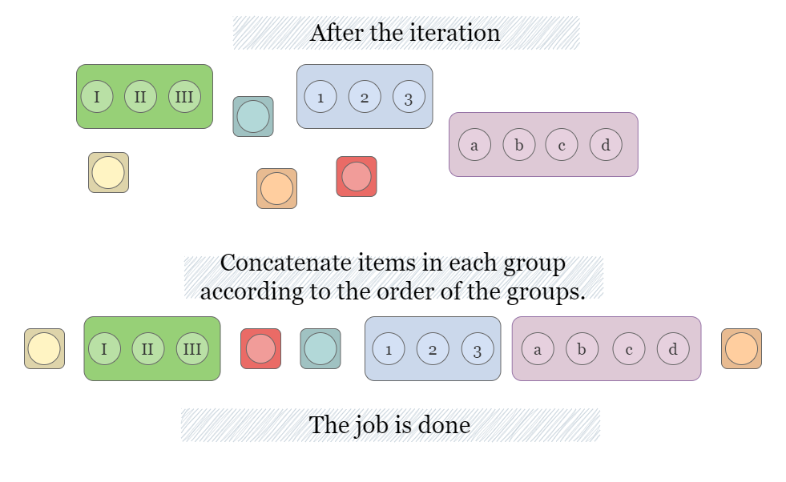
Finally, the groups are sorted based on the group dependencies, and items within each group are also sorted based on the their individual dependencies.
Initialize group_id as m. Iterate over each item i, if it does not
belong to any group, assign it a unique group id group_id, and increment group_id
by 1.
Construct two adjacency maps item_graph and group_graph for all items and groups,
respectively. Build two in degree list item_indegree and group_indegree for all
items and groups, respectively.
Traverse through beforeItems, add every pair of items dependency (prev, curr) as a
dependency to item_graph, and increment the indegree of curr by 1. If two items
belong to different groups group[prev] and group[curr], add the group dependency
to group_graph, and increment the indegree of group[curr] by 1.
Perform a topological sorting of items according to item_graph and item_indegree.
If there is a cycle, the task is impossible.
Perform a topological sorting of groups based on group_graph and group_indegree. If
there is a cycle, the task is impossible.
Create an empty list answer to store the final order and a hash map ordered_groups
to store the sorted items within each group.
Iterate over the sorted items, and for each item i, add it to ordered_groups while
preserving its original order within the group: ordered_groups[group[i]].append(i).
Traverse through the sorted groups, and for each group group_index, add all its items order_groups[group_index]
to answer while maintaining their original order.
Java
class Solution {
public int[] sortItems(int n, int m, int[] group, List> beforeItems) {
// If an item belongs to zero group, assign it a unique group id.
int groupId = m;
for (int i = 0; i < n; i++) {
if (group[i] == -1) {
group[i] = groupId;
groupId++;
}
}
// Sort all item regardless of group dependencies.
Map> itemGraph = new HashMap<>();
int[] itemIndegree = new int[n];
for (int i = 0; i < n; ++i) {
itemGraph.put(i, new ArrayList<>());
}
// Sort all groups regardless of item dependencies.
Map> groupGraph = new HashMap<>();
int[] groupIndegree = new int[groupId];
for (int i = 0; i < groupId; ++i) {
groupGraph.put(i, new ArrayList<>());
}
for (int curr = 0; curr < n; curr++) {
for (int prev : beforeItems.get(curr)) {
// Each (prev -> curr) represents an edge in the item graph.
itemGraph.get(prev).add(curr);
itemIndegree[curr]++;
// If they belong to different groups, add an edge in the group graph.
if (group[curr] != group[prev]) {
groupGraph.get(group[prev]).add(group[curr]);
groupIndegree[group[curr]]++;
}
}
}
// Topological sort nodes in the graph, return an empty array if a cycle exists.
List itemOrder = topologicalSort(itemGraph, itemIndegree);
List groupOrder = topologicalSort(groupGraph, groupIndegree);
if (itemOrder.isEmpty() || groupOrder.isEmpty()) {
return new int[0];
}
// Items are sorted regardless of groups, we need to differentiate them by the groups they belong to.
Map> orderedGroups = new HashMap<>();
for (Integer item : itemOrder) {
orderedGroups.computeIfAbsent(group[item], k -> new ArrayList<>()).add(item);
}
// Concatenate sorted items in all sorted groups.
// [group 1, group 2, ... ] -> [(item 1, item 2, ...), (item 1, item 2, ...), ...]
List answerList = new ArrayList<>();
for (int groupIndex : groupOrder) {
answerList.addAll(orderedGroups.getOrDefault(groupIndex, new ArrayList<>()));
}
return answerList.stream().mapToInt(Integer::intValue).toArray();
}
private List topologicalSort(Map> graph, int[] indegree) {
List visited = new ArrayList<>();
Stack stack = new Stack<>();
for (Integer key : graph.keySet()) {
if (indegree[key] == 0) {
stack.add(key);
}
}
while (!stack.isEmpty()) {
Integer curr = stack.pop();
visited.add(curr);
for (Integer prev : graph.get(curr)) {
indegree[prev]--;
if (indegree[prev] == 0) {
stack.add(prev);
}
}
}
return visited.size() == graph.size() ? visited : new ArrayList<>();
}
}
Python3
class Solution:
def sortItems(self, n, m, group, beforeItems):
# If an item belongs to zero group, assign it a unique group id.
group_id = m
for i in range(n):
if group[i] == -1:
group[i] = group_id
group_id += 1
# Sort all item regardless of group dependencies.
item_graph = [[] for _ in range(n)]
item_indegree = [0] * n
# Sort all groups regardless of item dependencies.
group_graph = [[] for _ in range(group_id)]
group_indegree = [0] * group_id
for curr in range(n):
for prev in beforeItems[curr]:
# Each (prev -> curr) represents an edge in the item graph.
item_graph[prev].append(curr)
item_indegree[curr] += 1
# If they belong to different groups, add an edge in the group graph.
if group[curr] != group[prev]:
group_graph[group[prev]].append(group[curr])
group_indegree[group[curr]] += 1
# Tologlogical sort nodes in graph, return [] if a cycle exists.
def topologicalSort(graph, indegree):
visited = []
stack = [node for node in range(len(graph)) if indegree[node] == 0]
while stack:
cur = stack.pop()
visited.append(cur)
for neib in graph[cur]:
indegree[neib] -= 1
if indegree[neib] == 0:
stack.append(neib)
return visited if len(visited) == len(graph) else []
item_order = topologicalSort(item_graph, item_indegree)
group_order = topologicalSort(group_graph, group_indegree)
if not item_order or not group_order:
return []
# Items are sorted regardless of groups, we need to
# differentiate them by the groups they belong to.
ordered_groups = collections.defaultdict(list)
for item in item_order:
ordered_groups[group[item]].append(item)
# Concatenate sorted items in all sorted groups.
# [group 1, group 2, ... ] -> [(item 1, item 2, ...), (item 1, item 2, ...), ...]
answer = []
for group_index in group_order:
answer += ordered_groups[group_index]
return answer
Time complexity: O(n2)O(n^2)
To topological sort nn items:
(prev,
curr) stored in beforeItem, which takes O(n2)O(n^2) time.
The maximum number of groups is nn, so the time complexity of topological sorting the groups is also O(n2)O(n^2).
Space complexity: O(n)O(n)